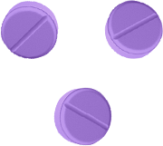

Творю чудеса
с помощью питания
и привычек
избавиться.избавиться.избавиться.избавиться.
от 90% заболеваний и преумножить здоровье
стать.стать.стать.стать.стать.стать.стать.стать.стать.стать.стать.стать.стать.стать.стать.стать.стать.стать.стать.
Энергичным, красивым и самоуверенным Человеком
сохранить.сохранить.сохранить.сохранить.сохранить.сохранить.сохранить.
Молодость и стать активным долгожителем
обрести.обрести.обрести.обрести.обрести.обрести.обрести.обрести.обрести.обрести.обрести.обрести.обрести.обрести.обрести.обрести.обрести.обрести.
Новую жизнь в гармонии с собой и миром и стать счастливым
БЕЗ
Жестких ограничений, физического изнурения, психического надрыва
Таблеток и вредных препаратов
Сложных схем и больших времязатрат
Откатов
Питания
Бытовых привычек

Мышления и отношения к себе

+1 секретный ингредиент*
*Любовь, которая спасет мир и всех нас
У вас или детей есть проблемы со здоровьем, которые нарастают как снежный ком, мешают жизни или даже угрожают ей? Вы поменяли уже 10 специалистов, но никто так и не смог помочь?
Решаетесь на операции в надежде решить проблемы, но они все равно возвращаются?

Сдали кучу дорогих анализов, которые потом никак не помогли в лечении?
Пробуете все новые и новые препараты, которые помогают только первое время или вовсе не работают, а болезни все обостряются?
Этот замкнутый круг сводит с ума и забирает последние силы… Этот замкнутый круг сводит с ума и забирает последние силы… Этот замкнутый круг сводит с ума и забирает последние силы… Этот замкнутый круг сводит с ума и забирает последние силы… Этот замкнутый круг сводит с ума и забирает последние силы… Этот замкнутый круг сводит с ума и забирает последние силы… Этот замкнутый круг сводит с ума и забирает последние силы… Этот замкнутый круг сводит с ума и забирает последние силы… Этот замкнутый круг сводит с ума и забирает последние силы…
У вас все хорошо, вы здоровы! Просто попейте витаминки.
...и не могут нормально помочь?
Или вы уже тратите много драгоценного времени, сил и денег на БАДы, фитнес, йогу, массажиста, но результаты минимальны и временны, а откаты ощутимы и постоянны?
Тело по-прежнему «живет своей жизнью», которая идет вразрез с вашей?
А дорогущие косметологические процедуры и средства ухода вызывают привыкание, требуя увеличения дозировок, но в итоге не дают желаемого результата, как и курсы по прокачке сексуальности и сеансы с психологом?
И снова седая ночь порочный круг с тратой времени, сил и денег, разочарование… И снова седая ночь порочный круг с тратой времени, сил и денег, разочарование… И снова седая ночь порочный круг с тратой времени, сил и денег, разочарование… И снова седая ночь порочный круг с тратой времени, сил и денег, разочарование…
..от похудения и омоложения...
...избавления от псориаза, кист, миом и артрита...
...до улучшения памяти и мышления...
...реабилитации инсультных и онкологических больных
Ответы на эти важнейшие вопросы вы найдете на этой странице - ради них я ее сделал.
Здесь вас ждет детективное расследование:
«Кто украл наше здоровье, красоту и энергию»
уникальная по своей глубине и пользе информация. Изучив ее до конца, вы
узнаете много нового, местами ошеломляющего. Возможно, она изменит
частичку вашего мировоззрения, а потом даже жизнь. В лучшую сторону
конечно, с обратным движением все и так хорошо справляются :) Так что
веселье начинается, будет интересно и полезно, читайте до конца.
Роковую ошибку специалистов по здоровью и красоте, которая может угрожать вашему здоровью и внешности
Что наше настроение напрямую зависит от работы кишечника
Почему лекарства задуманы так, чтобы не вылечивать на 100% ?
Как защитить себя и близких от этих опасностей и наконец добиться результата?
А не могут,
потому что они...
Устраняют только их, не углубляясь в первопричину проблемы. Это как срезать стебель сорняка, а корень оставить в земле и потом удивляться, почему сорняк вырос снова.
Такой же принцип работает и в нашем организме. Не устранив глубинную первопричину проблемы - ее саму не решить.
...а каждый орган и систему в отдельности, без привязки друг к другу. Если проблемы с кожей, то занимается только кожей, в отрыве от работы других органов. А ведь в теле все тонко взаимосвязано и нужно рассматривать все системы комплексно. А человека в целом, как сложный организм, состоящий из тела, ума и эмоциональной структуры.
Эти принципы относятся не только к лечению заболеваний, но и работе с внешностью, косметологии и другому. Ведь, как известно, все внешнее - отражение внутреннего.
НАПРИМЕР
НАПРИМЕР
НАПРИМЕР
НАПРИМЕР
НАПРИМЕР
НАПРИМЕР
НАПРИМЕР
НАПРИМЕР
НАПРИМЕР
И если у вас нарушен белковый обмен, то сколько бы коллагена вы не съели и не намазали, он не усвоится как надо и не даст должного эффекта. В таком случае даже самый лучший и дорогой коллаген не улучшит вашу кожу, волосы, ноги, суставы и остальное.
Спойлер:
белковый обмен зависит от работы желудка и его кислотности. Так что состояние кожи, волос, ногтей = состояние желудка.
НАПРИМЕР
НАПРИМЕР
НАПРИМЕР
НАПРИМЕР
НАПРИМЕР
НАПРИМЕР
НАПРИМЕР
НАПРИМЕР
НАПРИМЕР
И мало что знает о том, где зарыты настоящие сокровища первопричины проблем со здоровьем и внешностью.

...и не изменила глобальный подход в работе с организмом.
А множество специалистов обучается в ВУЗах, где зачастую дают не самые актуальные знания, мягко говоря. Сами врачи это подтверждают.
...большинство проблем с организмом начинается в желудочно-кишечном тракте (ЖКТ). Да, именно там, в органах ЖКТ: желудке, кишечнике, печени и др. (привет коллагену с желудком).
Это доказано официальной наукой, сотнями современных исследований по всему миру. И грамотными специалистами по здоровью (коих пока мало, к сожалению), знающими этот принцип и биохимию в целом. Которые на деле помогают людям избавиться от тяжелейших заболеваний и радикально преобразиться внешне.
Вы сами наверняка сталкивались с ситуацией, когда съешь что-нибудь “не то” и сразу прыщ вскочит, пятно вылезет, зачешется где-нибудь, вспухнет.
В серьезных случаях вскакивает уже не прыщ, а полип, миома или злокачественная опухоль.
По понятным причинам этот принцип не касается оперативного лечения: хирургии, травматологии, стоматологии и т.п.
И что с помощью определенного протокола питания можно улучшать эти состояния. Вы слышали об этом где-нибудь? Это опять же научно доказанный факт.
Про серотонин вы точно слышали - это «гормон счастья, радости и хорошего настроения». Он получил такое название, потому что подавляет болевые сигналы, отрицательные эмоции и участвует в регуляции настроения. Небольшой его недостаток в организме ведет к плохому настроению, а сильный дефицит способствует развитию депрессии и других психических расстройств.

Поэтому когда с кишечником есть проблемы (а они есть у большинства, к сожалению), то и с серотонином они тоже будут. А это «привет» эмоциональным качелям, плохому настроению и депрессивным состояниям.
Так что, здоровый кишечник - ключ к хорошему настроению и выходу из депрессии.